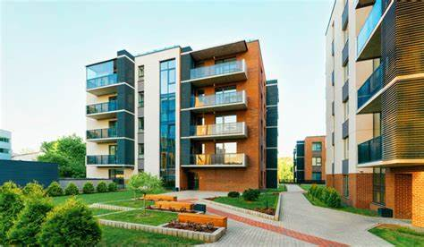

About me
Hi! I’m Arthur Henriques Garcia, a 16-year-old from Brazil who’s been calling the Netherlands home for the past five years. Moving from the vibrant culture of Brazil to the charming Dutch landscape has been an exciting journey. I’m passionate about exploring new cultures and making the most of every experience life has to offer.
.jpeg)
I live in a cozy apartment in Amsterdam West with my parents and our playful Australian Shepherd, Kira. We've called this place home for the past three years. It’s a warm, welcoming spot that fits perfectly with the lively neighborhood around us.

In my free time, I enjoy a mix of activities that keep me busy and happy. I love climbing, which gives me a thrill and a great workout. Reading lets me escape into different worlds, while gaming is a fun way to unwind. Olympic weightlifting is my way to stay strong and challenge myself physically. And when I’m in the mood for something relaxing, I dive into baking, experimenting with new recipes and enjoying the results. Each hobby adds a unique flavor to my daily life.
I’m a dedicated entrepreneur with a strong work ethic and discipline. My long-term commitment to weightlifting mirrors how I approach running my small business, showing my ability to set and achieve goals with persistence.

Mina do meu condomínio - Seu Jorge
My own summer (far away) - Deftones
After the Storm - Tyler
Misericordia - Klaf
Essa moça tá Differente - Chico Buarque
Thumper - The Jig
Deixa alagar - Grupo Revelação
Mein Herz brennt - Rammstein
All Caps - MF DOOM
Wait and Bleed - Slipknot